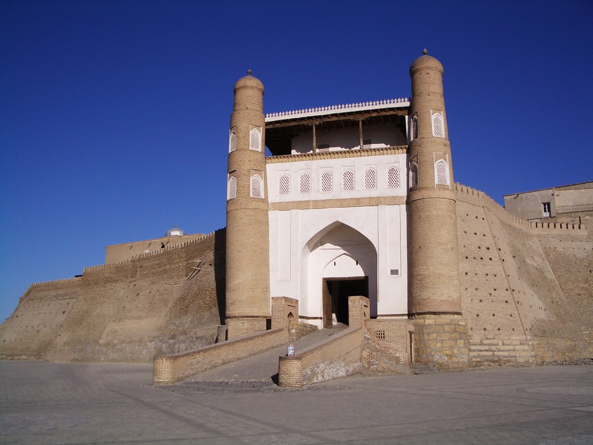
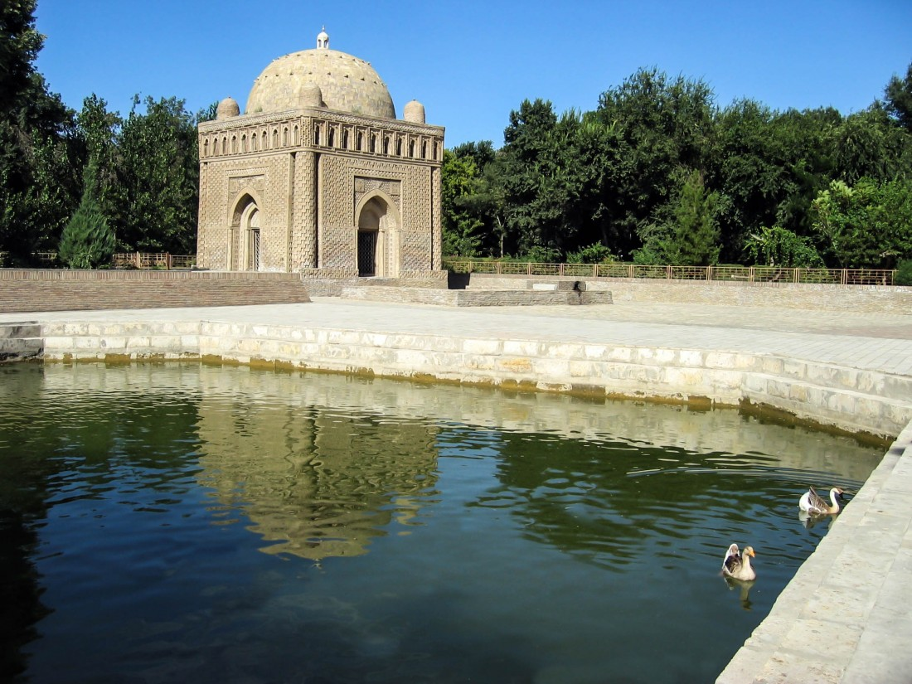

Бухара - Столица исламской культуры
Священная Бухара – одна из туристических жемчужин Узбекистана. Исторический центр города внесен в список Всемирного наследия ЮНЕСКО. Возраст города превышает 2500 лет.

Фотогалерея
Климат
Климат здесь можно охарактеризовать как жаркий и засушливый летом, поэтому путешествуя в это время года по Бухаре, обязательно возьмите с собой зонтик и солнцезащитный крем. Зимы же в Бухаре довольно мягкие, но не стоит пренебрегать теплыми вещами.
Подарки и сувениры
На бухарских улицах можно встретить множество различных сувенирных лавочек и мастерских. Порой кажется, что все сувениры одинаковые, но это не так! Каждому продавцу будет чем Вас удивить! Бухара — это ткацкая столица Узбекистана! Если хотите приобрести стильные и современные элементы гардероба, которые еще и плюс ко всему имеют национальные нотки, то Вы просто обязаны посетить Бухару! Большая часть магазинов расположена вдоль площади Ляби-Хауз и в Торговых куполах, которые находятся рядом со знаменитым ансамблем Пои-Калян. Помимо одежды тут можно приобрести и саму ткань икат. Такую ткань применил в своей коллекции торговый дом Armani. Она, конечно, не дешевая, но ее цена полностью оправдывает себя. Также Бухара славится своими коврами. Качество ковров ничуть не уступают Индийским, Пакистанским и Иранским, а порой даже превосходят! Для любителей экзотики, Бухара может предложить музыкальные инструменты, которые изготавливаются на ее территории с особой искусностью или же ножи ручной работы.
Кухня
Основным блюдом всех городов Узбекистана является плов. Если Вы проедете по всем регионам нашей страны, то удивитесь на сколько разнообразно готовится это блюдо. В каждом городе люди будут убеждать Вас, что плов у них самый лучший в стране! И только попробовав все, Вы сможете сами понять какой из них Вам нравится больше остальных. Бухарский плов или как его еще называют, Оши-Софи, считается диетическим из-за способа приготовления. Готовится он своеобразно, его не перемешивают в отличии от андижанского или ташкентского. Еще одной особенность является то, что он готовится в только в медном казане. К бухарским блюдам еще относятся такие блюда как халиса или каиш. Еще больше про Узбекскую Кухню Вы сможете прочитать по этой ссылке.


История
Этому величественному городу по самым скромным подсчетам больше 2500 лет и на его территории находится множество древних мечетей, медресе и усыпальниц исламских святых. Люди испокон веков говорили, что на все мусульманские города с неба нисходит благодатный свет, и только над Бухарой он поднимется к небу. Также, Бухара — это единственный город в Центральной Азии, история которого была практически полностью задокументирована известным историком Х века – Наршахи. В своих трудах он рассказал, что ни один город не имел столько названий как Бухара. В Китае V века его называли Нюми, позже в источниках Империи Тан, его называли Ань, Аньси, Бухо и Бухэ. Но чаще всего в истории его упоминают именно под названием Бухара. По данным этимологов это название произошло от согдийского «buharak», что переводится как «счастливое место». Сейчас на территории Бухары сохранились более 140 памятников, относящихся к разным эпохам, кварталы и даже целые районы, возведенные не один век назад. Бухару, также называют городом поэзии и сказок, так как легендами и историями окутан весь старый город! Кстати говоря, историческая часть города была внесена в список городов Всемирного наследия ЮНЕСКО в 1993 году.
